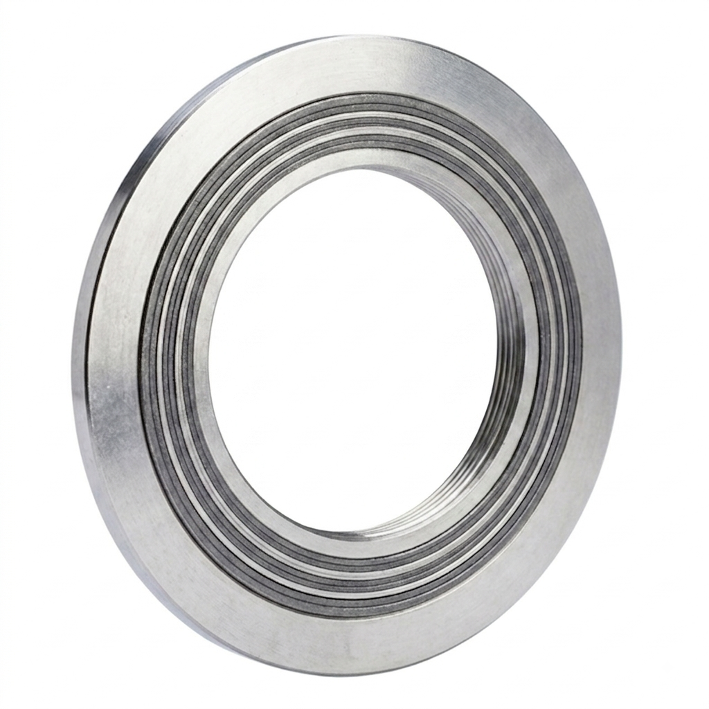
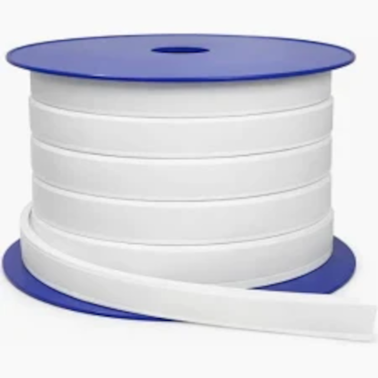

Juntas Industriais
Desenvolvidas para proporcionar vedação estanque e confiável em flanges, tubulações, vasos de pressão e trocadores de calor. Projetadas para suportar condições severas de trabalho, inclindo ciclagem térmica, altas pressões e fluídos quimicamente agressivos.
Variações Disponíveis

Junta Espirometálica (Espiral)
Fabricada com fita metálica moldada em 'V' intercalada com enchimento vedante (Grafite ou PTFE). Oferece altíssima resiliência e estanqueidade em flanges sob ciclagem térmica e elevadas pressões.
Solicitar Cotação
Junta de PTFE Expandido
Possui estrutura multidirecional macia e altamente moldável, ideal para flanges irregulares, de baixa rigidez ou de vidro/fibra, garantindo inércia química praticamente universal.
Solicitar CotaçãoJunta de PTFE Expandido
Possui estrutura multidirecional macia e altamente moldável, ideal para flanges irregulares, de baixa rigidez ou de vidro/fibra, garantindo inércia química praticamente universal.
Solicitar CotaçãoFicha Técnica Geral - Juntas Industriais
| Especificação | Detalhes |
|---|---|
| Tipos de Juntas: | Espirometálicas (Espiral), PTFE Expandido, Papelão Hidráulico, Metálicas (RTJ) e Envelopadas. |
| Materiais Utilizados: | Aço Inoxidável (AISI 304, 316L), Aço Carbono, Grafite Flexível, PTFE 100% Expandido e Fibras Sintéticas. |
| Pressão Máxima de Trabalho: | Até 250 bar (Juntas Espirometálicas e RTJ) / Até 100 bar (Juntas de PTFE Expandido / Papelão). |
| Faixa de Temperatura: | -200°C a +550°C (Espirometálicas com Grafite) / -240°C a +260°C (PTFE Expandido). |
| Classes de Pressão Atendidas: | 150#, 300#, 600#, 900#, 1500# e 2500# (Padrão ASME/ANSI) / PN10 a PN100 (Padrão DIN/EN). |
| Compatibilidade Química: | Resistência a ácidos concentrados, bases, vapor superaquecido, óleos, gases e hidrocarbonetos. |
| Aplicações Típicas: | Flanges de Tubulações Industriais, Vasos de Pressão, Trocadores de Calor, Reatores e Válvulas. |
| Normas Atendidas: | ASME B16.20, ASME B16.21, EN 1514-1, DIN 2690 e cortes sob medida/desenho. |